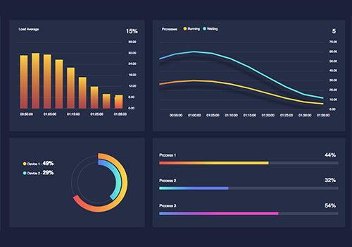

Autonomía digital y control básico
Interfaces cerebro–computadora de bajo costo para controlar funciones digitales básicas: clic, desplazamiento, selección y comandos simples.
- Uso de dispositivos EEG accesibles.
- Combinación con sensores fisiológicos.
- Adaptación a distintos niveles de movilidad.
Pensado para personas con movilidad reducida y contextos de rehabilitación.

Evaluación y entrenamiento mental
Plataforma para evaluar y entrenar atención, memoria y funciones ejecutivas.
- Pruebas visuales y auditivas.
- Detección de fatiga y carga cognitiva.
- Planes de entrenamiento adaptativos.
Ideal para estudiantes, docentes, profesionales y adultos mayores.

Monitoreo de signos vitales con IA
Análisis de series de tiempo fisiológicas para detectar cambios relevantes.
- Registro continuo o por sesiones.
- Detección automática de patrones.
- Alertas configurables.
Para centros de rehabilitación, clínicas e investigadores.
Visión por computadora médica
Algoritmos que ayudan a preclasificar imágenes médicas.
- Detección preliminar de patrones.
- Marcadores visuales para personal médico.
- Integración en flujos clínicos.
Pensado para instituciones que desean IA complementaria.

Plataforma central y dashboards
Centro de control con neurodatos, biometría y métricas cognitivas.
- Paneles para distintos perfiles profesionales.
- Gestión de usuarios y sesiones.
- Reportes exportables.
Ideal para pilotos, estudios y despliegues a escala.
Consultoría y pilotos
Acompañamiento especializado para diseñar y validar proyectos en neurotecnología e IA.
- Diseño de pilotos y PoC.
- Integración con flujos existentes.
- Investigación conjunta con instituciones.
Ideal para instituciones que quieren empezar de forma segura y basada en evidencia.